Overview
In this assignment, I started with building a single step in the evaluation of a Bezier curve using de Casteljau algorithm. Then I applied this evaluation step recursively in Task 2 to evaluate a Bezier surface. In Tasks 3, I implemented a method to compute area-weighted vertex normals at vertices, which allow us to better shading for smooth surfaces. In Tasks 4 and 5, I implemented edge flip and edge split for manipulating triangle meshes represented by half-edge data structure. Lastly, in Task 6, I used the edge flip and edge split functions to implement loop subdivision, which converts a coarse polygon mesh into a higher-resolution one.
Section I: Bezier Curves and Surfaces
Part 1: Bezier Curves with 1D de Casteljau Subdivision
Briefly explain de Casteljau's algorithm and how you implemented it in order to evaluate Bezier curves.de Casteljau's algorithm evaluates a Bezier curve based on a list of control points and a variable t which ranges from 0 to 1. For every pair of adjacent control points, the algorithm performs linear interpolation on them to compute an intermediate point, using t to indicate the intermediate point's relative distances to the two control points. Recursively, for every pair of adjacent intermediate points, it performs another round of linear interpolation. The recursion continues until there is only one point left, and that point is the point in the Bezier curve corresponding to t.
In my implementation, I used a for loop to iterate through the list of points. For every pair of adjacent points p_i
and p_i+1, I did a linear interpolation using the formula (1 - t) * p_i + t * p_i+1 to compute an intermediate point.
I store all newly computed intermediate points in a vector and return that vector at the end.
Show screenshots of each step / level of the evaluation from the original control points down to the final evaluated point. Press E to step through. Toggle C to show the completed Bezier curve as well.
|
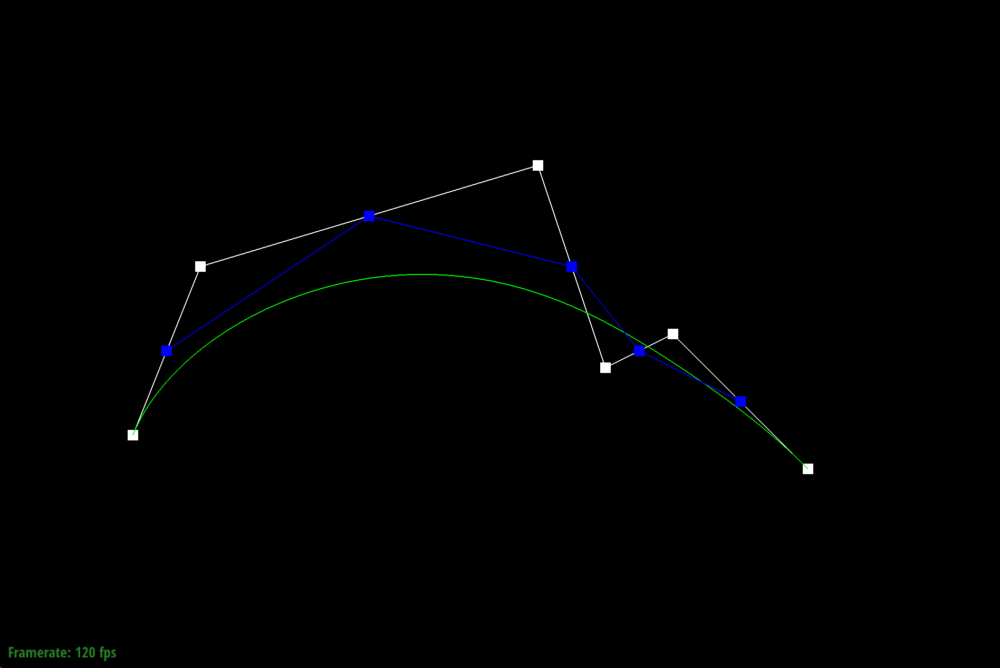
|

|
|
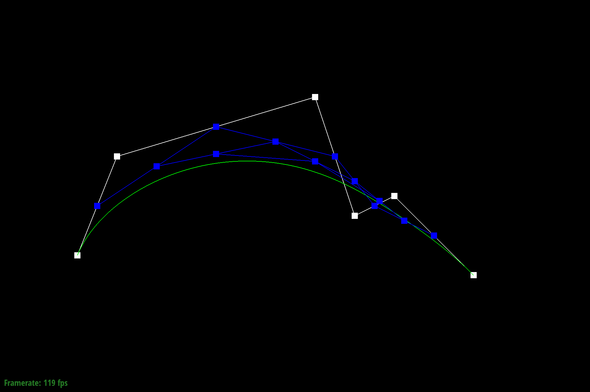
|
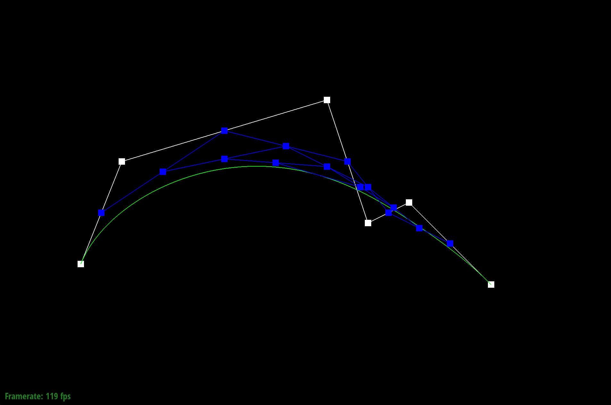
|
|
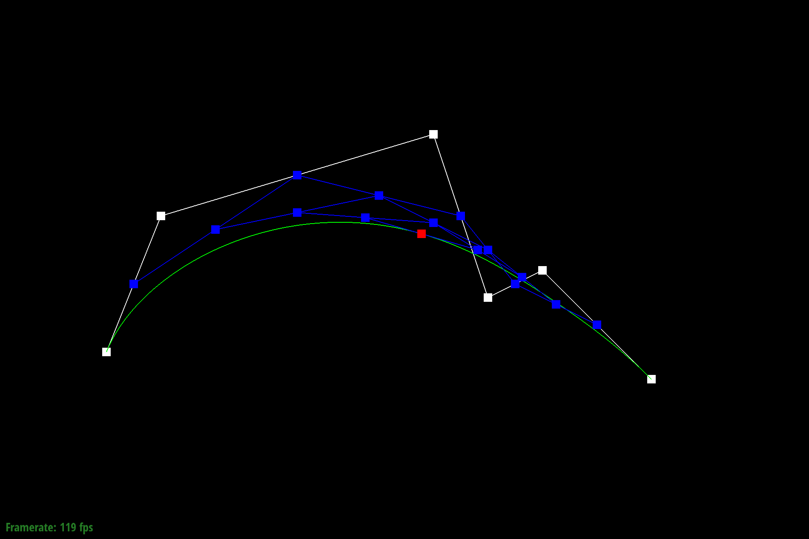
|
Show a screenshot of a slightly different Bezier curve by moving the original control points around and modifying the parameter \(t\) via mouse scrolling.
Part 2: Bezier Surfaces with Separable 1D de Casteljau
Briefly explain how de Casteljau algorithm extends to Bezier surfaces and how you implemented it in order to evaluate Bezier surfaces.The algorithm takes in an NxN array of control points. Each row in this array defines a single Bezier curve. For each of these N Bezier curves, we get a point on the curve corresponding to a given value of u. These N points then forms an array of control points to define another Bezier curve. On this new Bezier curve parameterized by v, we take a point on the curve for a given value of v. This point falls onto the Bezier surface.
For this task, I first implemented BezierPatch::evaluateStep(...) to compute a list of intermediate points for the given list of control points, using
linear interpolation controlled by the variable t. Then in BezierPatch::evaluate1D(...), I recursively applied BezierPatch::evaluateStep(...) to the 1D array
of control points given in the input until there is only one point left. Lastly, in BezierPatch::evaluate(...), I used a for loop to iterate
through the rows in the N x N array of control points. For each row, I passed the list of points into BezierPatch::evaluate1D(...) to compute the
point on its corresponding Bezier curve when u equals the given value. I used a vector to store all these N points. Then I passed this vector to
BezierPatch::evaluate1D(...) to compute the point on its corresponding Bezier curve when v equals the given value
Show a screenshot of bez/teapot.bez (not .dae) evaluated by your implementation.
Section II: Triangle Meshes and Half-Edge Data Structure
Part 3: Area-Weighted Vertex Normals
Briefly explain how you implemented the area-weighted vertex normals.
To traverse through the triangles incident to the given vertex, I first retrieved one of the outgoing
half-edge of the vertex h by calling halfedge(). Then I started a while loop
using h == halfedge() as the stop condition. In each while loop iteration, I updated h
to the next outgoing half-edge of the vertex in CCW order by calling h->twin()->next().
Within each while loop iteration, I first checked if this current half-edge h is on the boundary. If so,
I skipped it and moved on to the next outgoing half-edge. If not, I retrieved the coordinates of the current triangle's
three vertices using the following code:
Vector3D position_1 = position;Vector3D position_2 = h->next()->vertex()->position;Vector3D position_3 = h->next()->next()->vertex()->position;
To get the area of the triangle, I computed two vectors representing two edges of the triangle:
Vector3D vector_12 = position_2 - position_1;Vector3D vector_13 = position_3 - position_1;
I also got the normal vector of the triangle face by calling h->face()->normal();
Lastly, I weighted the normal vectors by their corresponding area, and divided the weighted sum by the sum of all areas.
Show screenshots of dae/teapot.dae (not .bez) comparing teapot shading with and without vertex normals. Use Q to toggle default flat shading and Phong shading.
Part 4: Edge Flip
Briefly explain how you implemented the edge flip operation and describe any interesting implementation / debugging tricks you have used.As instructed by the assignment prompt, I drew the structures of a simple mesh before and after a flip and wrote down a list of all elements, i.e., half-edges, vertices, edges, and faces, in this mesh.
|
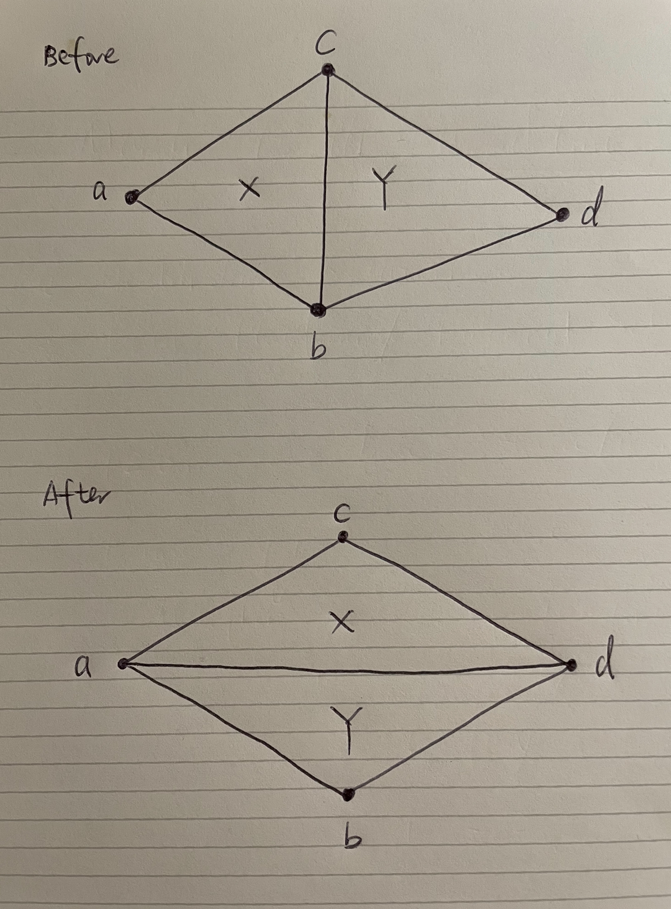
|
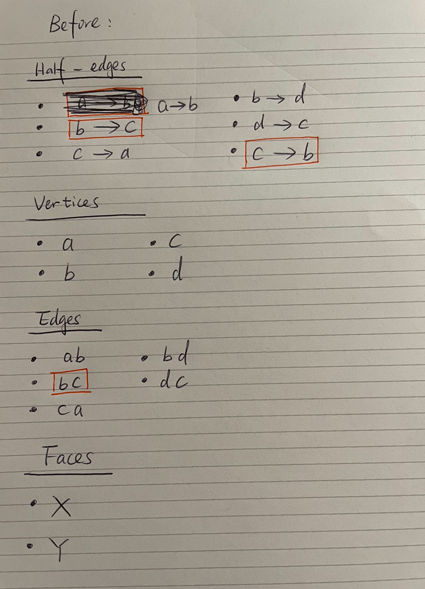
|
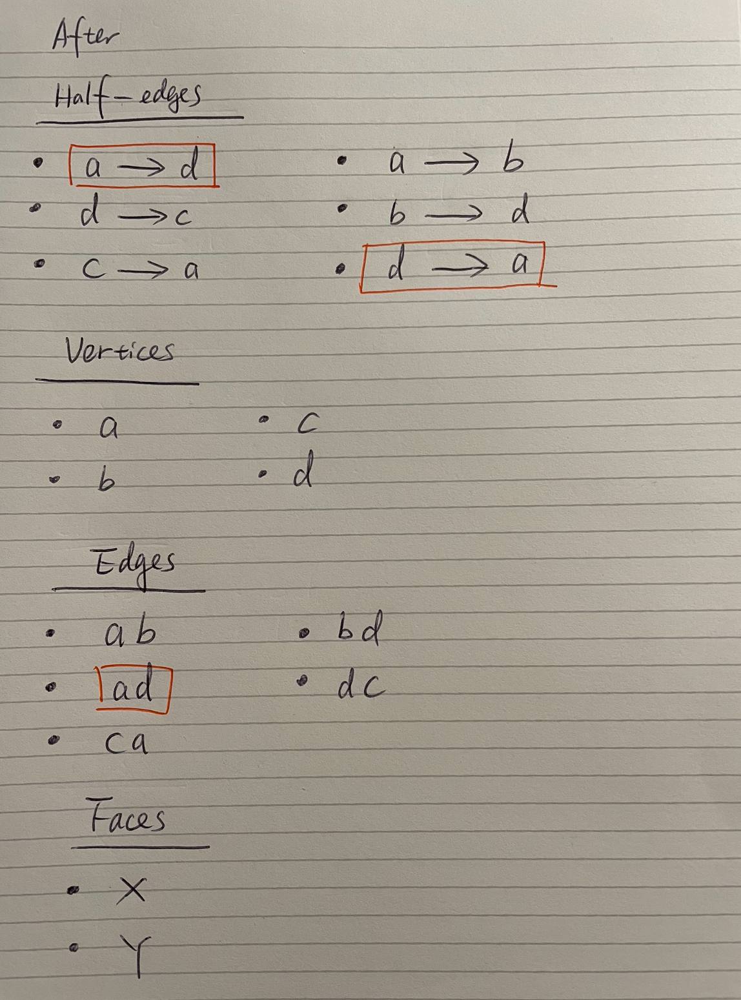
|
In my implementation, I performed the following steps:
- Using edge
e0as a starting point, I listed all the elements before the flip. - 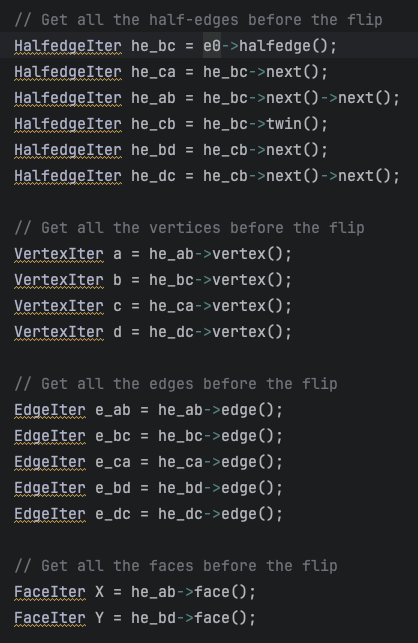
- In the second and the third pictures above, I circled out all the elements that get changed after the flip.
- I renamed these circled elements to reflect their new relationships in the flipped mesh.
- 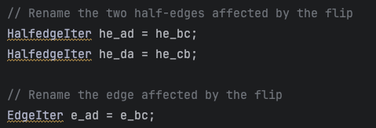
- Then as instructed by the prompt, for each vertex, edge, and face, I updated its half-edge pointer. For each half-edge, I updated its next, twin, vertex, edge, and face pointer to the correct element. I updated the pointers in all these elements to the correct element in the modified mesh, regardless of whether the element being pointed to has changed or not.
- Lastly, I added a if statement at the very beginning of the function to check whether the input edge is a boundary edge. If so, I return the edge without flipping it.
Show screenshots of the teapot before and after some edge flips.
Write about your eventful debugging journey, if you have experienced one.
Fortunately, I did not have to debug for this task.
Part 5: Edge Split
Briefly explain how you implemented the edge split operation and describe any interesting implementation / debugging tricks you have used.As instructed by the assignment prompt, I drew the structures of a simple mesh before and after a split and wrote down a list of all elements, i.e., half-edges, vertices, edges, and faces, in this mesh.
|
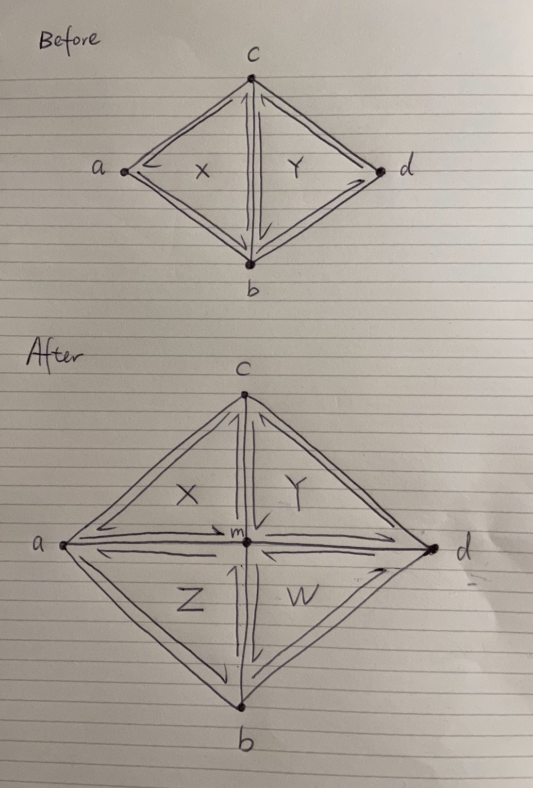
|
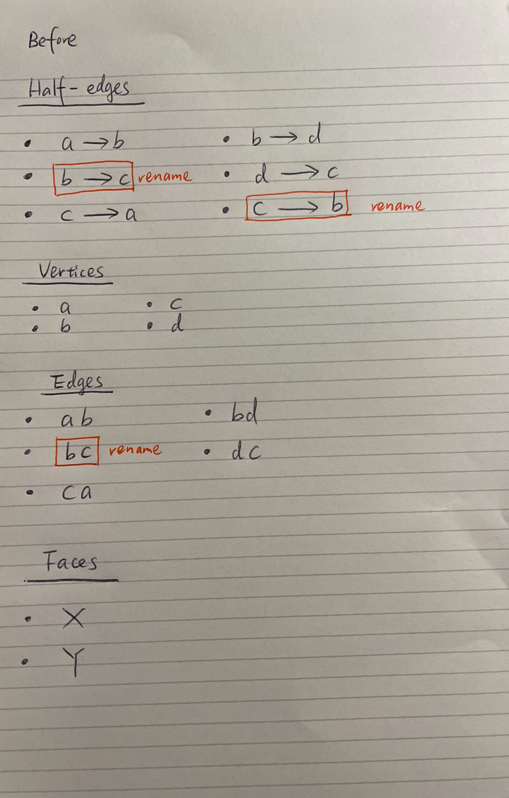
|
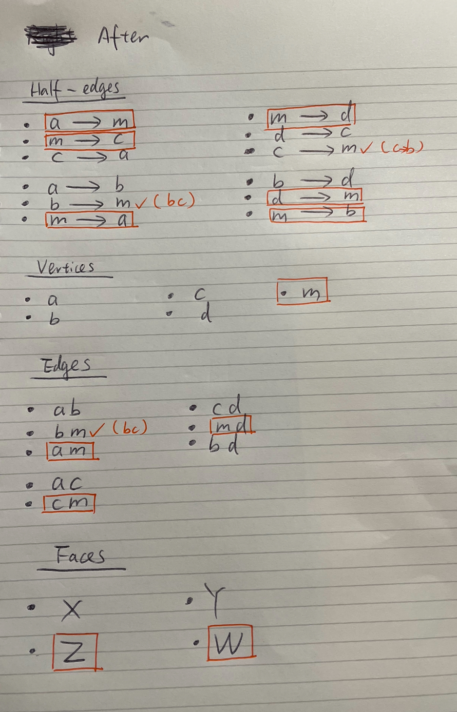
|
In my implementation, I performed the following steps:
- Similar to the implementation for Task 4, using edge
e0as a starting point, I listed all the elements before the split. - In the second picture above, I circled out all the elements that get changed after the split. I renamed these elements to reflect their new position in the splited mesh
- In the third picture above, I circled out all the elements that get added after the split:
- 6 half-edges
- 1 vertex
- 3 edges
- 2 faces
- I created these new elements by calling:
newHalfedge()newVertex()newEdge()newFace()- For the newly created vertex
m, I updated its position to the middle point of verticesbandc. Vector3D new_position = (b->position + c->position) / 2;- Then as instructed by the prompt, for each vertex, edge, and face, I updated its half-edge pointer. For each half-edge, I updated its next, twin, vertex, edge, and face pointer to the correct element. I updated the pointers in all these elements to the correct element in the modified mesh, regardless of whether the element being pointed to has changed or not.
- Lastly, I added a if statement at the very beginning of the function to check whether the input edge is a boundary edge. If so, I return the one of the vertices of the input edge.
Show screenshots of a mesh before and after some edge splits.
Show screenshots of a mesh before and after a combination of both edge splits and edge flips.
Write about your eventful debugging journey, if you have experienced one.
Fortunately, I did not have to debug for this task.
If you have implemented support for boundary edges, show screenshots of your implementation properly handling split operations on boundary edges.
I did not implement support for boundary edges.
Part 6: Loop Subdivision for Mesh Upsampling
Briefly explain how you implemented the loop subdivision and describe any interesting implementation / debugging tricks you have used.
- I computed new positions for all the vertices in the input mesh, using the Loop subdivision rule, and store
them in
Vertex::newPosition. - In this step, I used a for loop to iterate though every vertex
v. - For each
v, I retrieved its degreenand set the variableutou = n == 3? 3 / 16 : 3 / (8 * n). - I implemented a helper function called
MeshResampler::computeNeighborPositionSum(v)which takesvas an input and computes the sum of all its neighbor vertices' positions. InMeshResampler::computeNeighborPositionSum(v), I referred to code in this primer to traverse through all the neighboring vertices of vertexv. - I computed the new position of vertex
vasVector3D new_position = (1 - n * u) * original_position + u * original_neighbor_position_sum. - I stored this new position in
v->newPosition. - I marked each vertex as being a vertex of the original mesh by setting its
isNewtofalse. - I computed the updated vertex positions associated with edges, and store it in
Edge::newPosition. - In this step, I used a for loop to iterate though every edge
e. - For each edge
e, I computed the position of the new vertex to be inserted into the edge. - 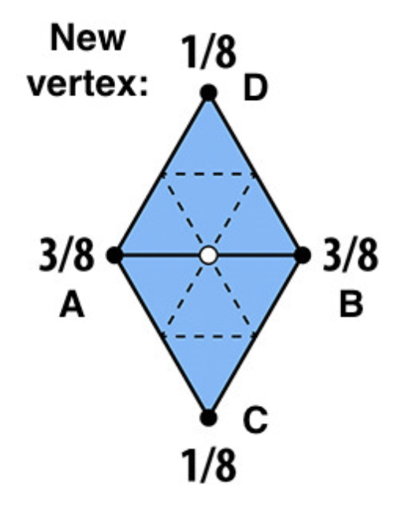
- Using the graph above as an illustration, I retrieved the positions of vertices A, B, C, and D and computed the new position using the formula given in the question prompt.
- 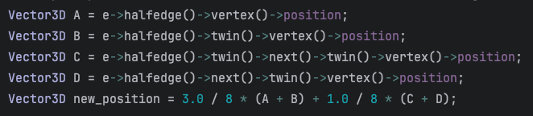
- I marked each edge as being an edge of the original mesh by setting its
isNewtofalse. - I splitted every existing edge in the mesh, in any order.
- In this step, I used a for loop to iterate though every edge
ein the mesh. - Before calling the split function, I check whether both vertices connected by the edge
eare old vertices. If so, I callmesh.splitEdge(e). Otherwise, I move on to the next iteration without splitting this edge. - Within the
splitEdge()function, when I create the new middle vertexm, I update itsisNewtotrue. When I create the three new edges, I update two of theirisNewtotrue, while keeping that of the new edge lying along the original edgeetofalse. This is useful later in deciding which edges to flip. We do not want to flip the "black" edges that are already along the boundary of the 4-way subdivided triangles. - In the end of the
splitEdge()function, I updatedm->newPositiontom->halfedge()->edge()->newPosition. - I flipped any new edge that connects an old and new vertex.
- In this step, I used a for loop to iterate though every edge
ein the mesh. - If edge
eis new, I check whether it connects an old and new vertex. If so, I callmesh.flipEdge(e). Otherwise, I move on to the next iteration without flipping this edge. - Lastly, I used a for loop to iterate though every vertex
vand copiedv->newPositionintov->position.
Take some notes, as well as some screenshots, of your observations on how meshes behave after loop subdivision. What happens to sharp corners and edges? Can you reduce this effect by pre-splitting some edges?
After rounds of loop subdivision, sharp edges and corners become smooth and shrink towards the center.
|
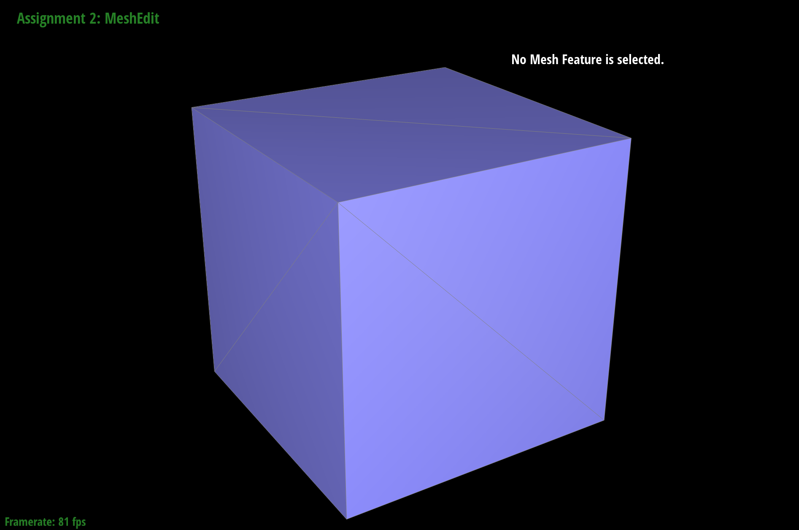
|
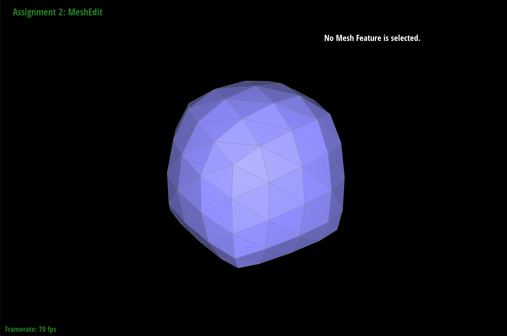
|
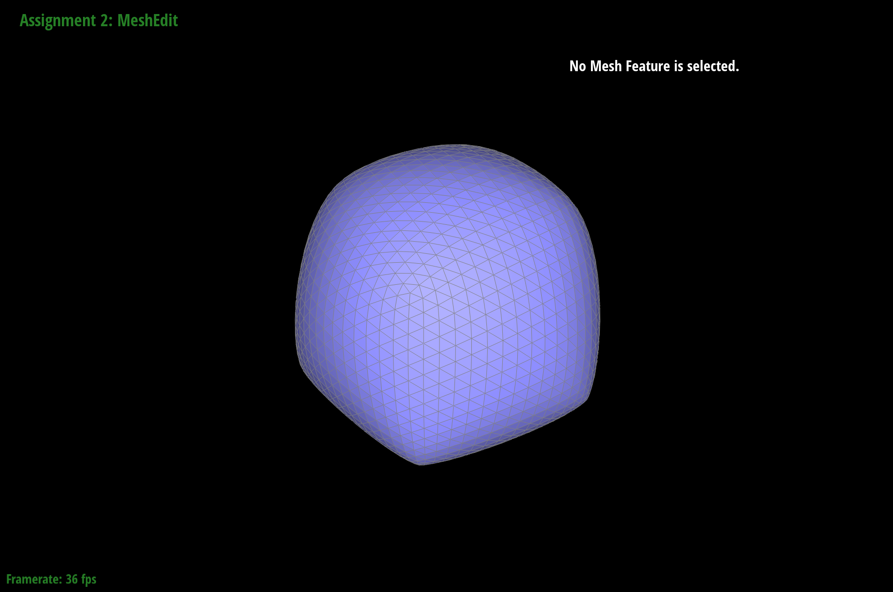
|
This effect can be reduced by pre-splitting some edges.
|
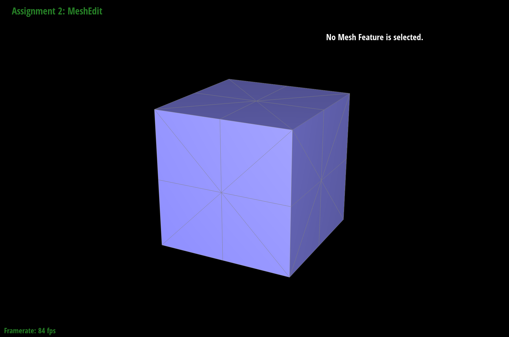
|
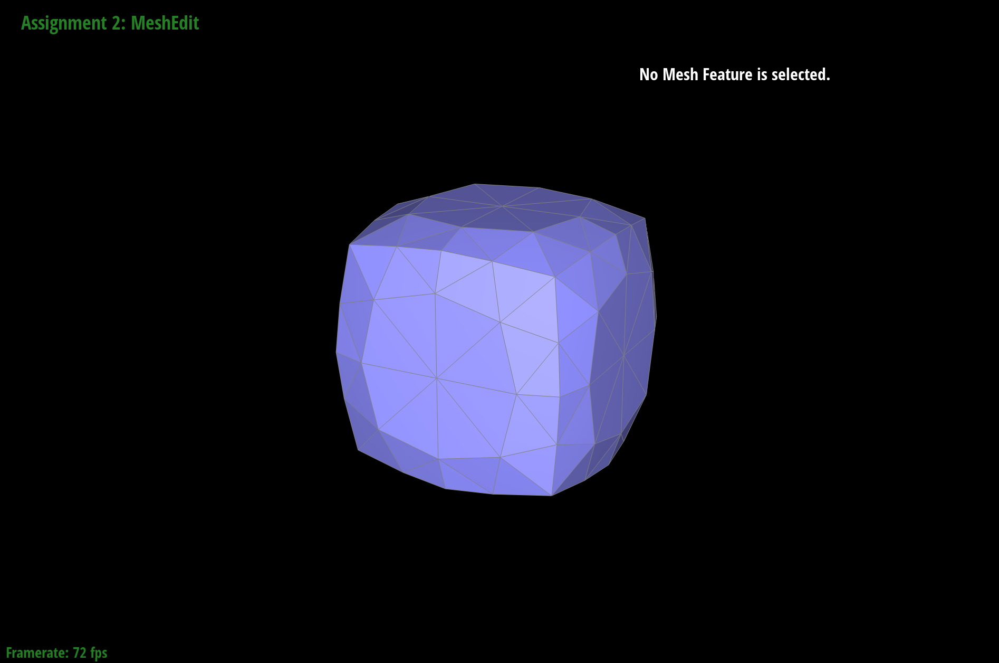
|
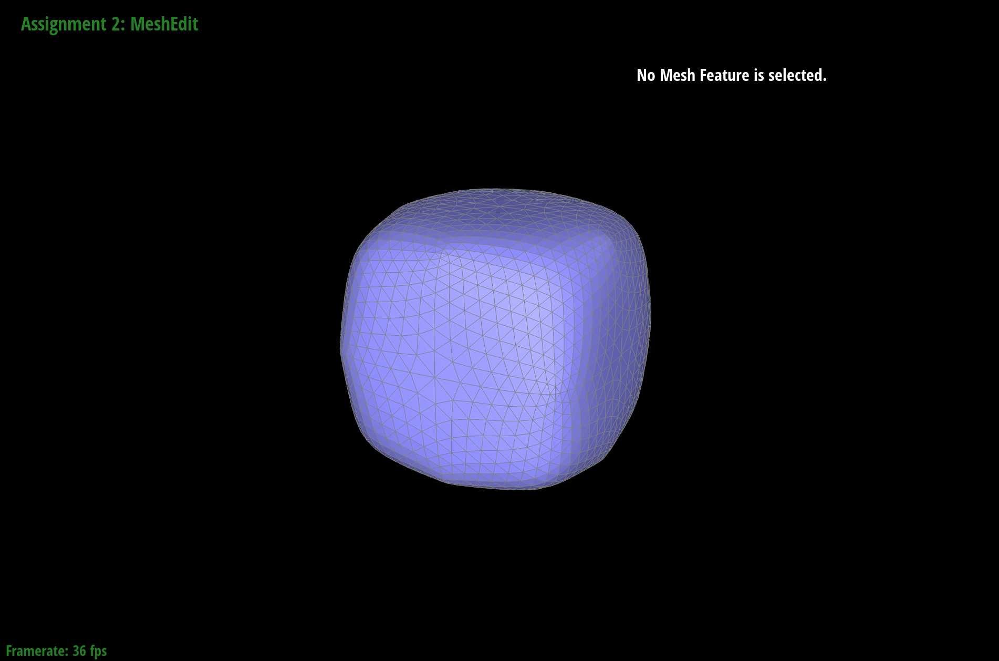
|
Load dae/cube.dae. Perform several iterations of loop subdivision on the cube. Notice that the cube becomes slightly asymmetric after repeated subdivisions. Can you pre-process the cube with edge flips and splits so that the cube subdivides symmetrically? Document these effects and explain why they occur. Also explain how your pre-processing helps alleviate the effects.
The cube becomes asymmetric after repeated subdivisions because in each subdivision, the computation of old vertices' new positions depends on the degree of those vertices. The original cube in dae/cube.dae does not have an equal number of edges connected to each vertex. Thus, vertices with different number of edges will experience different levels of repositioning, leading to asymmetry in the resulting shape.
|
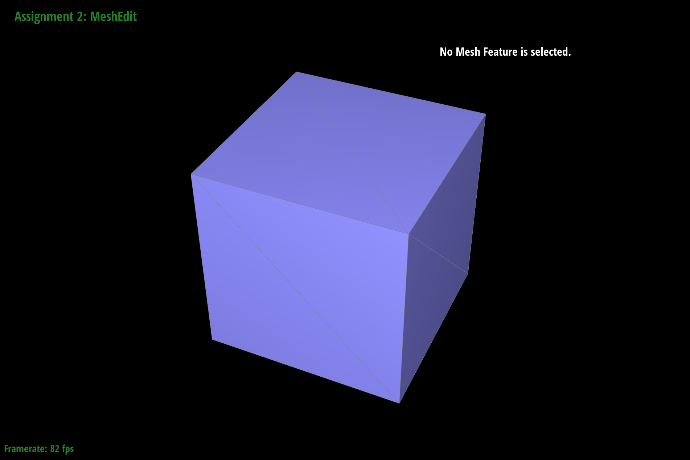
|
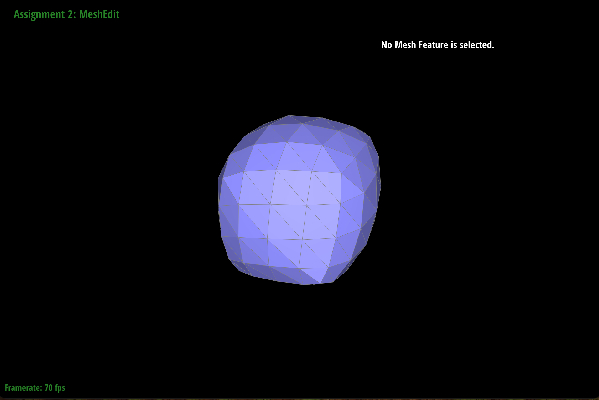
|
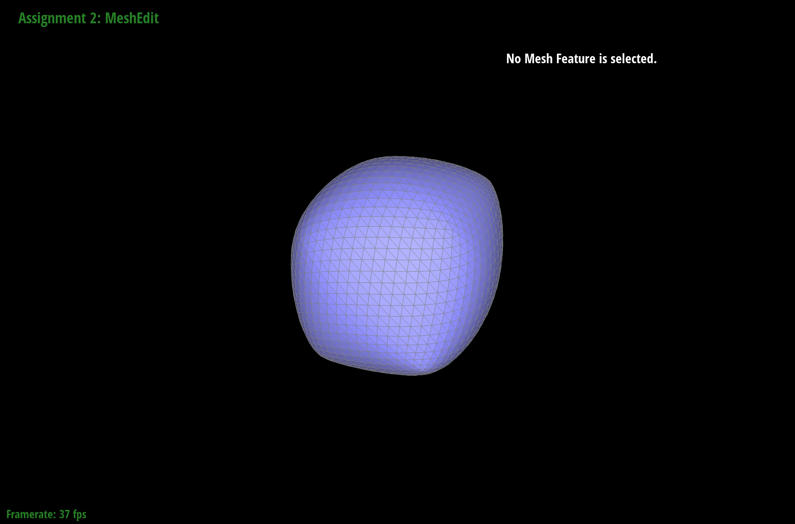
|
By edge flip and edge split, I pre-processed the cube such that every vertex in this cube now has the same degree.
In the computation of their new positions, they now use the same n and u in this formula
(1 - n * u) * original_position + u * original_neighbor_position_sum, leading to symmetry in the resulting shape.
|
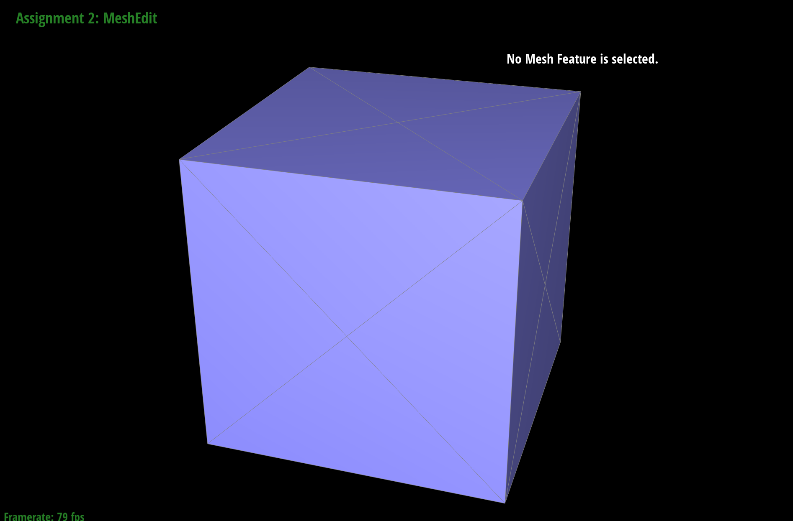
|
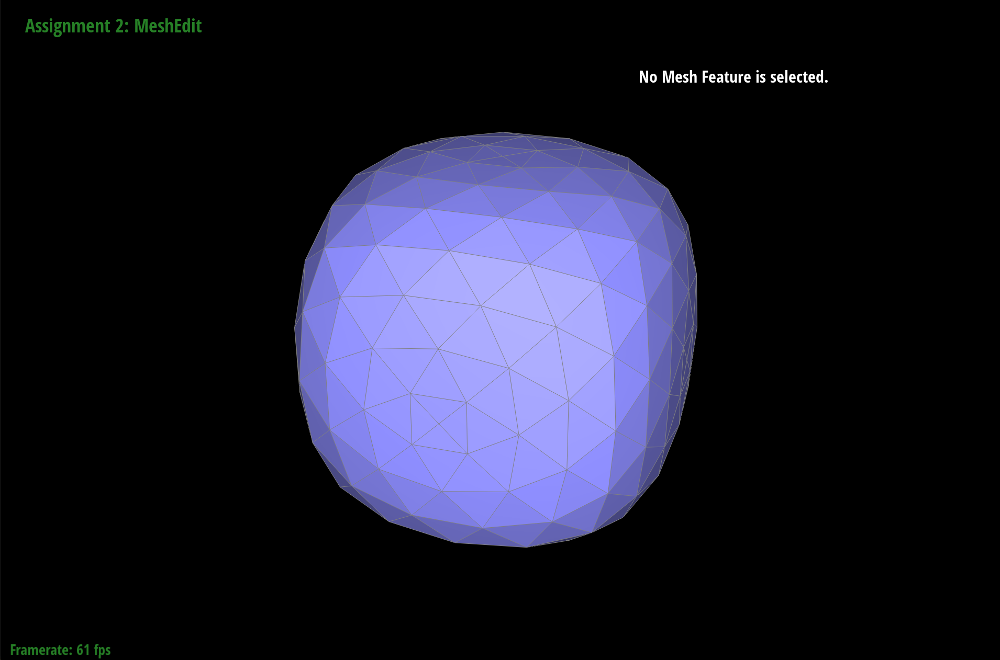
|
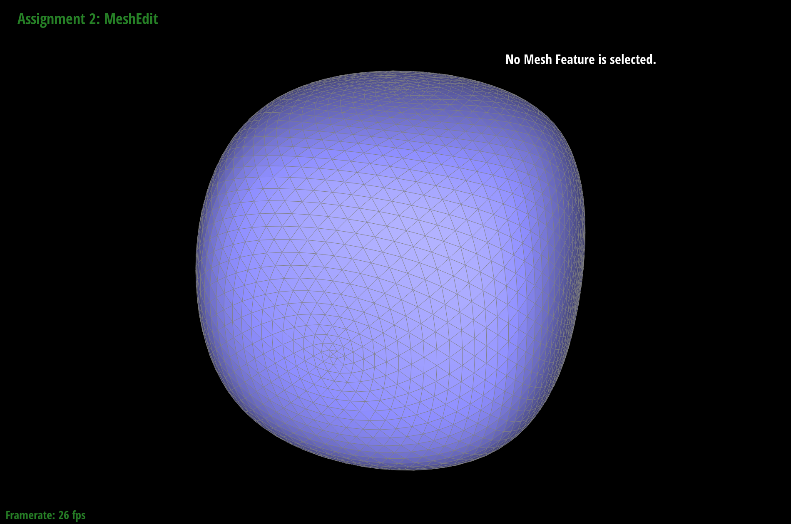
|
If you have implemented any extra credit extensions, explain what you did and document how they work with screenshots.
I did not implement any extra credit extensions.